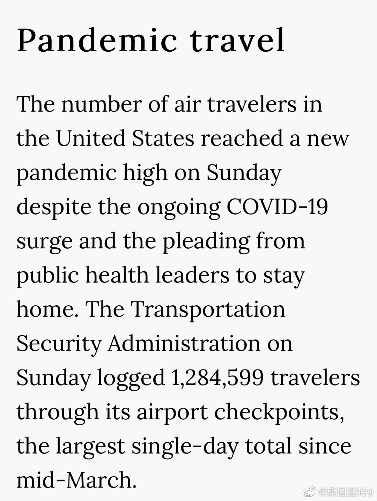

斯图亚特9
2020-12-28
又用GIMP处理了一次照片。边用边想，我这么折磨自己值得吗？Photoshop Elements现在打折70美元一个。因为用不了几次确实贵，但可以省了被GIMP折磨心灵的痛苦，也许是值得的？
斯图亚特9
2020-12-28
周日美国又有128万人通过机场安检，创造新的3月以来的纪录。

斯图亚特9
2020-12-28
《纽约邮报》——就是那个最开始爆拜登儿子笔记本硬盘的那个默多克旗下的右翼小报——今天头版喊话特朗普停止疯狂，接受败选的现实。